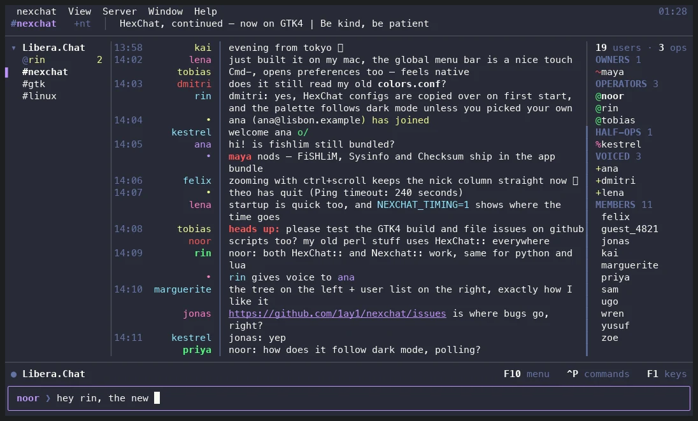
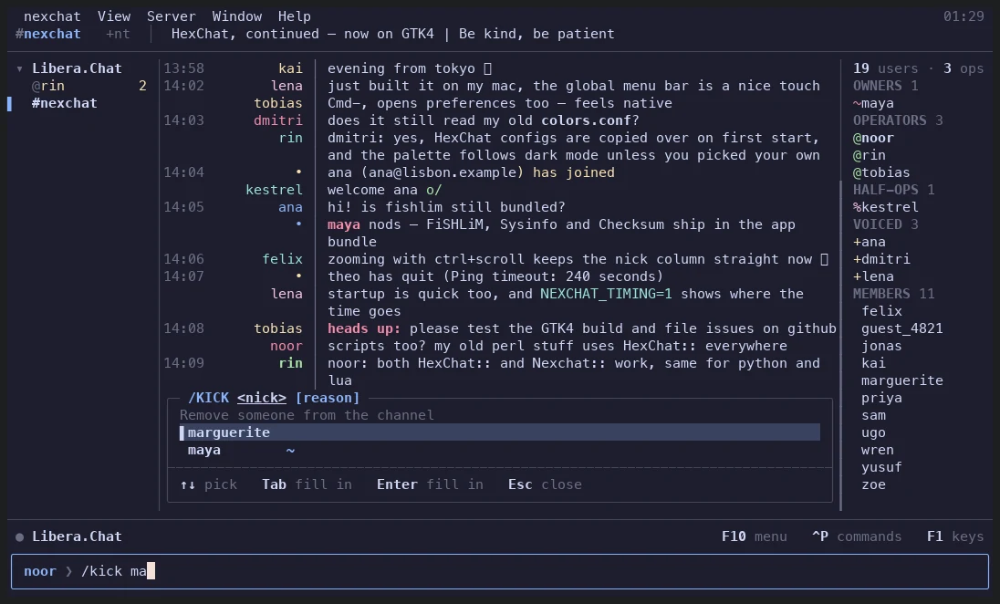

On the desktop
The HexChat you know, moved onto GTK4. Nothing is redesigned for its own sake.
GTK4 everywhere
HiDPI and Wayland done properly, on Linux, the BSDs, Windows and macOS.
Light and dark
Colours follow the system's mode. Colours you set yourself stay as they are.
At home on a Mac
The system menu bar, ⌘ shortcuts, a menu bar icon, a self-contained nexchat.app.
A native tray
StatusNotifierItem on Linux and BSD, the notification area on Windows, a menu bar item on macOS.
Stay online
Set up a bouncer (soju) in one click, or connect to the one you have; your networks keep going while you're away.
Scripting
Python, Perl and Lua, plus C plugins — the HexChat API, unchanged.
In the terminal
nexchat --tui runs the same client in a terminal: the same networks, settings, logs and scripts as the window, over SSH or in a tmux pane. It's the GUI's equal, not a cut-down version — every window is there, with the keyboard and the mouse.

Keys and mouse
Click tabs and nicks, drag to select and copy, drag the dividers, hover to see what's clickable.
Commands as you type
Type / for every command, what it takes and what it does; values for its arguments as you go.
Ctrl-P finds anything
Every menu action, every tab, every command in one fuzzy list.
600 themes
Pick a scheme and see it as you move through the list, or keep your terminal's own colours.
Any size
From a phone-sized corner to a wide monitor: columns give way in order, and a narrow screen stacks each message under its nick.
Everything live
Preferences, /set and the theme apply at once; your keybindings.conf and replace.conf work here too.

/kick ma: the usage, the argument you're on, and the people it could be.Keys worth knowing
| Ctrl P | every command, action and tab |
| Ctrl G | go to a channel or conversation |
| Ctrl F | find in the chat (↑ ↓ step through matches) |
| Alt 1…9 | switch tabs; Alt A the next with activity |
| F10 | the menus; F1 every key |
The design, every window and how it's tested: docs/tui-design.md.
Coming from HexChat
- On first start, nexchat copies
~/.config/hexchat(or%APPDATA%\HexChat) to its own folder. Your HexChat folder is left as it is. - Plugins keep working. The C API is unchanged (
hexchat-plugin.h, or the newnexchat-plugin.h). - Scripts keep working. Python can use
import hexchatorimport nexchat, Lua has both names, and Perl hasHexChat::andNexchat::. - Themes (
.hct) andcolors.confwork the same. - The HexChat documentation still applies.
More in Coming from HexChat: what's different, what's new, and running both.
Install
Download the latest release from GitHub Releases:
Windows
The setup.exe installer, or the portable.zip to run from any folder (settings stay beside it).
macOS
The .dmg (Apple Silicon); drag nexchat to Applications. The first time, right-click it and choose Open. The terminal client is inside: nexchat.app/Contents/MacOS/nexchat --tui.
Linux
The .flatpak: flatpak install --user nexchat-*.flatpak. On Arch, packaging/arch/nexchat-git.
Build from source
It builds with meson and needs GTK 4.14 or newer, GLib 2.76, OpenSSL and meson 0.59. The terminal client also needs a C++23 compiler and cmake (-Dtui=enabled; it's built when they're there).
Linux and BSD
git clone --recursive https://github.com/1ay1/nexchat
cd nexchat
meson setup build
ninja -C build
./build/src/fe-gtk/nexchat # the window
./build/src/fe-gtk/nexchat --tui # the terminal clientmacOS, with Homebrew
brew install meson gtk4 openssl@3 cmake
git clone --recursive https://github.com/1ay1/nexchat
cd nexchat
meson setup build -Ddbus=disabled
ninja -C build app
open build/nexchat.appWindows, in an MSYS2 UCRT64 shell
pacman -S mingw-w64-ucrt-x86_64-{gcc,pkg-config,meson,gtk4,gettext,openssl}
git clone https://github.com/1ay1/nexchat
cd nexchat
meson setup build -Ddbus=disabled -Dwith-perl=false
ninja -C buildQuestions
- Is HexChat discontinued?
- Yes. HexChat's repository was archived in 2024, and it never left GTK2. nexchat continues it on GTK4, keeping the layout, menus and keybindings.
- Can I keep my HexChat settings, plugins and scripts?
- Yes. On first start nexchat copies your HexChat configuration folder and leaves the original alone. C plugins build against the unchanged plugin API, and Python, Perl and Lua scripts keep working under their HexChat names.
- Can I use nexchat over SSH or without a desktop?
- Yes. nexchat --tui runs the same client in a terminal, with the same networks, settings, logs and scripts as the desktop window.
- Which platforms does nexchat run on?
- Linux, the BSDs, Windows and macOS. The terminal client runs on Linux, the BSDs and macOS.
- Is nexchat free?
- Yes. It is free and open source software under the GPL v2, like HexChat and X-Chat before it.